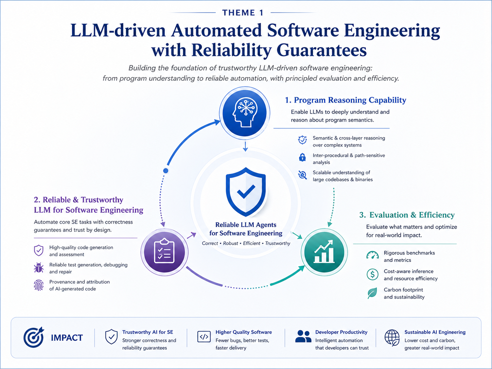
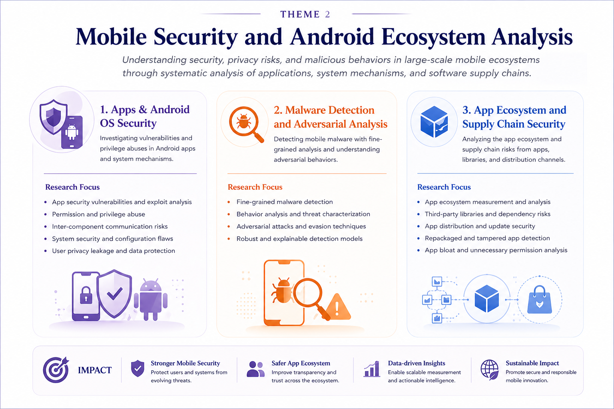
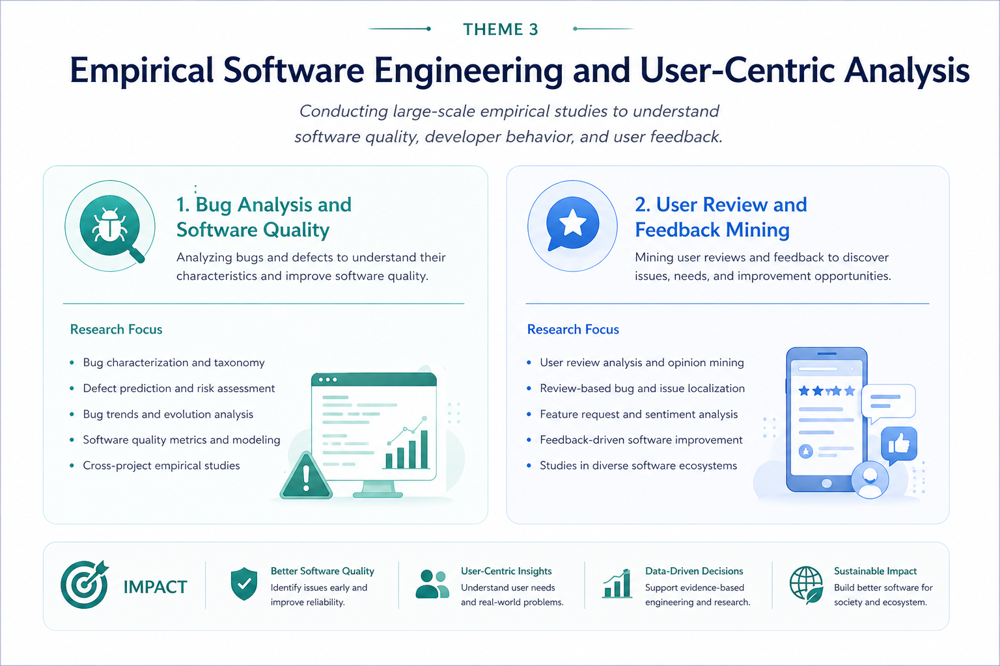

My group studies how AI assisted software systems can be made secure, reliable, measurable, and deployable. We combine program analysis, empirical software engineering, software security, mobile ecosystem analysis, and LLM based automation to build practical methods, benchmarks, and tools for trustworthy software systems.
For the full list of publications, please see here.
Theme 1: Secure, Reliable, and Measurable AI Assisted Software Systems
This research theme investigates how AI assisted software systems can be made secure, reliable, measurable, and deployable. The core focus remains computer science, particularly software engineering, program analysis, software security, empirical software engineering, and AI assisted software development. As large language models and agentic AI systems are increasingly used to generate, test, repair, debug, and operate software, software engineering needs new methods for semantic reasoning, reliability assessment, security analysis, benchmark design, workflow validation, and cost aware deployment. This work treats AI assistance as part of real software ecosystems rather than isolated text generation.

Program Reasoning and Semantic Analysis
Developing techniques for understanding and validating software behavior at the semantic level. This direction combines program analysis, static analysis, dynamic analysis, taint analysis, configuration analysis, and LLM assisted reasoning to detect defects, security risks, compatibility issues, and behavioral inconsistencies in software systems.
- Program analysis reasoning
- Cross representation and cross layer semantic reasoning
- Semantic validation of AI generated code and patches
- Artemis: LLM Assisted inter procedural path sensitive taint analysis (OOPSLA 2025, CCS 2023) Top
- LLM CompDroid: Repairing configuration compatibility bugs (TOSEM 2025)
- KEENHash: Large scale binary code similarity analysis (ISSTA 2025) Top
- Semantic validation of AI generated software artifacts in computational workflows, such as notebooks, scripts, and data processing pipelines.
Core capability:
Representative papers and assets:
Valuable asset to add:
AI Assisted Software Generation, Testing, Debugging, and Repair
Studying how AI systems support core software engineering activities, including code generation, test generation, automated debugging, program repair, and low code software development. This direction asks when AI assistance improves software quality, when it introduces hidden defects, and how generated artifacts can be systematically evaluated and improved.
- Quality assessment of AI generated code
- Reliable test generation and validation
- Automated debugging and program repair
- Provenance and attribution of AI generated code
- Test augmentation (OOPSLA 2026) Top
- Coverage goal selection (TSE 2024)
- Low Code Programming using traditional versus LLM support (JSS 2025)
- ChatGPT versus search based software testing (TSE 2024)
- Unearthing Gas Wasting Code Smells in Smart Contracts (TSE 2024)
- Assessing the Quality of Code Generation by ChatGPT (TSE 2024)
- A unified AI assisted software construction pipeline that links generation, testing, static analysis, security review, repair validation, and human oversight.
Core capability:
Representative papers and assets:
Valuable asset to add:
Benchmarking and Measurement of AI Assisted Software Systems
Developing benchmarks and metrics for evaluating AI assisted software systems. The focus is not only whether an AI system produces a correct answer, but whether the generated software artifact is reliable, secure, reproducible, maintainable, cost efficient, and suitable for deployment.
- Benchmark design and evaluation metrics
- Software correctness, security exposure, reproducibility, and traceability
- Cost aware inference and carbon footprint measurement
- SecBenchLLM, ongoing benchmark project
- LLM EcoBench Lite, ongoing benchmark project
- Cost aware inference studies and carbon footprint evaluation
- A benchmark framework that reports test pass rate, incorrect patch risk, newly introduced vulnerabilities, inference cost, review effort, and carbon footprint in the same evaluation table.
Core capability:
Representative papers and assets:
Valuable asset to add:
Security of AI Assisted and Agentic Software Ecosystems
Studying the security risks introduced when AI systems interact with software tools, repositories, package managers, files, command line environments, APIs, and external services. This direction treats tool using AI systems as part of real software ecosystems and focuses on sandboxing, runtime monitoring, permission control, auditability, and supply chain security.
- Tool using coding agents and software automation agents
- Sandboxing, permission control, runtime monitoring, and audit logging
- Prompt injection defense, malicious dependency detection, and data leakage prevention
- MCP SandboxScan: WASM based secure execution and runtime analysis for MCP tools (CoRR 2026)
- Android app bundle analysis (TSE 2025)
- Third party library and dependency analysis (ASE 2019, TSE 2021)
- Repackaged Apps Detection (SANER 2019)
- App Debloat (TSE 2022)
- A security benchmark for tool using coding agents, covering unsafe execution, prompt injection, dependency attacks, and unintended data exposure.
Core capability:
Representative papers and assets:
Valuable asset to add:
Reliability of Computational and Developer Workflows
Studying the reliability of software workflows that involve scripts, notebooks, automation tools, data pipelines, and AI agents. This direction focuses on concrete computational and developer workflows, including whether they contain exception handling, output validation, logging, permission boundaries, and failure recovery mechanisms.
- Reliability analysis of notebooks, scripts, automation pipelines, and developer workflows
- Output validation, logging, exception handling, and failure recovery
- Permission boundaries and safety checks in AI assisted workflows
- Bug characterization in Jupyter systems (EASE 2025)
- Public workflow reliability study, ongoing empirical project
- A workflow reliability benchmark for AI generated or AI assisted computational workflows, such as notebooks, scripts, and automation pipelines.
Core capability:
Representative papers and assets:
Valuable asset to add:
Sustainable and Cost Aware Deployment of AI Assisted Software Systems
Studying the deployment cost, energy use, and carbon footprint of AI assisted software engineering systems. The goal is to make AI assisted software development not only technically effective, but also economically and environmentally sustainable.
- Correctness per unit cost
- Reliability improvement per carbon footprint
- Deployable and scalable model choices for software engineering tasks
- LLM EcoBench Lite, ongoing benchmark project
- Cost aware inference studies, ongoing research direction
- Carbon footprint evaluation for AI assisted software engineering, ongoing research direction
- A measurement study comparing small and large models across bug repair, code generation, testing, and workflow generation under accuracy, cost, and carbon constraints.
Core capability:
Representative papers and assets:
Valuable asset to add:
Theme 2: Mobile Security and Android Ecosystem Analysis
Understanding security, privacy risks, and malicious behaviors in large-scale mobile ecosystems through systematic analysis of applications, system mechanisms, and software supply chains.

Apps & Android OS Security
- Unauthorized encrypted private data transmission (ICSE 2026) Top
- Mobile Sharing Service Abuse (WWW 2022) Top
- App Link Attack (FSE 2020) Top
- Resource Race Attack (SANER 2020)
- Diehard Android Apps (ASE 2020) Top
Representative papers:
Malware Detection and Adversarial Analysis
- Fine-grained malicious component detection (ASE 2023) Top
- Adversarial attacks on deep learning apps (JSEP 2023)
Representative papers:
App Ecosystem and Supply Chain Security
- Android app bundle analysis (TSE 2025)
- Third-party library and dependency analysis (ASE 2019,TSE 2021)
- Repackaged Apps Detection (SANER 2019)
- App Debloat (TSE 2022)
Representative papers:
Theme 3: Empirical Software Engineering and User-Centric Analysis
Conducting large-scale empirical studies to understand software quality, developer behavior, and user feedback.

Bug Analysis and Software Quality
- Bug characterization in Jupyter systems (EASE 2025)
- Defect prediction and software quality studies (SCP 2025, IJSEKE 2023, ICPADS 2021, WCMC 2021, TReli 2021, SAC 2021, QRS 2020, IST 2020, QRS 2019, ISSRE 2019, JCST 2019, JSS 2019a, JSS 2019b, IST 2018, ICPC 2018)
Representative papers:
User Review and Feedback Mining
- User-review-based bug localization (TSE 2022)
- Feedback Analysis in SPL Forked Developments (SPLC 2025)